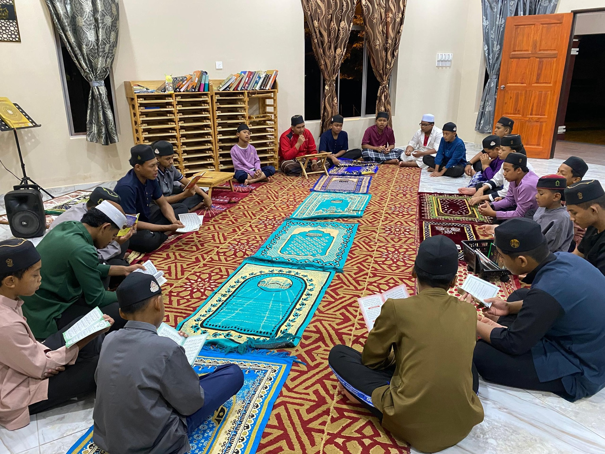
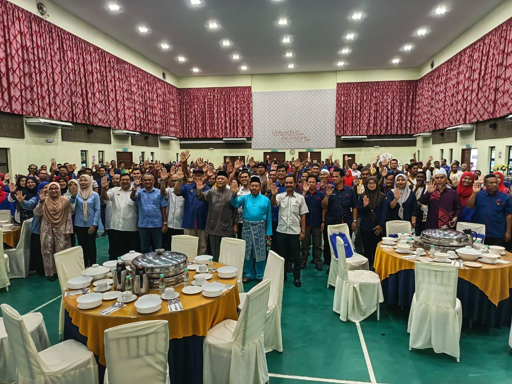
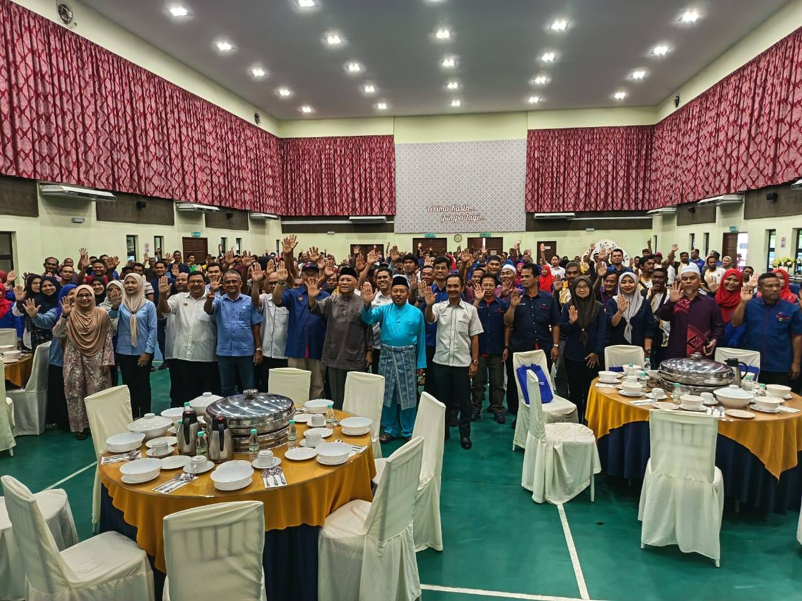
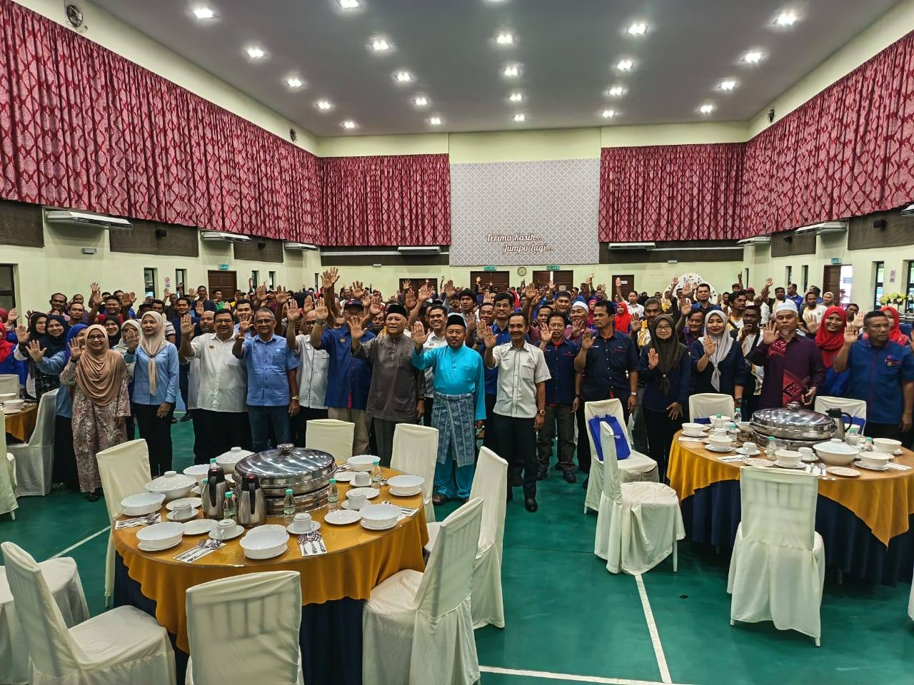

Since 2004
Welcome to Rumah Permata Camar
Rumah Permata Camar is a charitable children’s home located in Kuantan, Pahang. It provides care, education, and moral guidance for orphans and underprivileged children.
Managed by Badan Kebajikan Anak‑Anak Yatim dan Miskin Nadwah Permata Camar, the home focuses on nurturing responsible and independent individuals.
Learn More Support UsOur Focus

 


Permata Camar emphasises education, Islamic values, character development, and community involvement to prepare children for independent living.